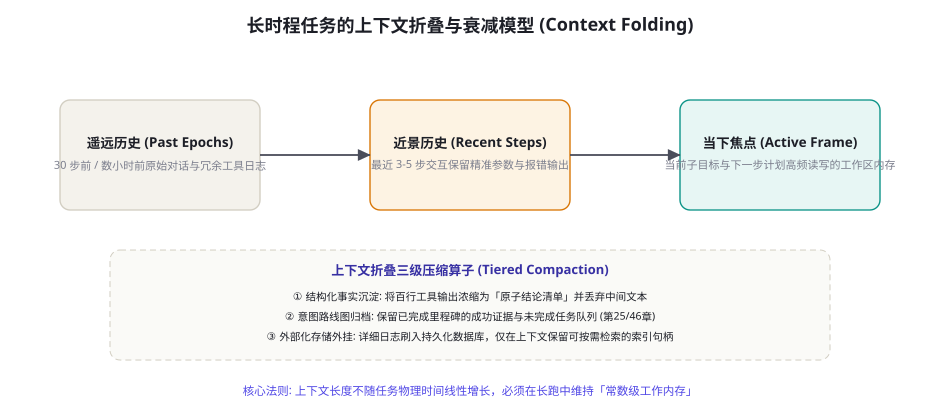
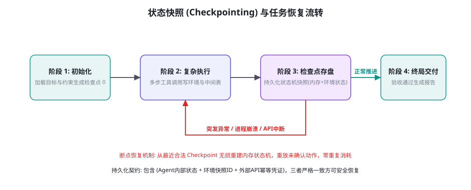

长时程 Agent：小时级任务、压缩与 Checkpointing
从执行数秒钟的即时问答，跨越到持续自主运转数小时乃至数天的复杂长时程任务（Long-Horizon Tasks），是智能体迈向真正生产级数字员工的必由之路。然而，长时程绝非仅仅意味着「把循环次数设大」。随着交互步数上升，上下文窗口爆炸、注意力稀释漂移、进程意外崩溃、外部网络中断与幂等性丧失等系统级灾难将接踵而至。本章将解密长时程任务的系统性瓶颈、上下文渐进式折叠与分层衰减算法、工业级状态机 Checkpointing 机制，以及分布式环境下的无损状态迁移与断点续跑工程。
长时程任务的四重系统性瓶颈
当一个智能体的生命周期跨越数十个交互轮次、数万行执行日志与数小时的物理挂钟时间时，系统架构将直面四大结构性冲击：
第一重瓶颈：上下文膨胀与注意力「大海捞针」退化。正如第 26 章所揭示的，自回归模型对长序列中段信息的检索与服从能力存在天然的 U 型衰减曲线（Lost in the Middle）。随着长时程任务不断累积工具调用的原始输出、代码编译报错与页面快照，上下文很快突破 100k 乃至更大。此时，模型开始遗忘任务最初的根本目标（Goal Drift），甚至与多轮前早已被排查排除的错误假说再次发生死锁。
第二重瓶颈：单步误差级联与不可逆状态扩散。在单步任务中，95% 的操作准确率堪称优秀；但在一个需要 50 步连续交互的长程任务中，整个任务端到端的无差错概率仅为 $0.95^{50} \approx 7.6\%$！任何微小的环境观测失误或参数构造偏移，都会像雪崩一样向下游扩散，最终导致智能体在偏离轨道的错误世界上越跑越远。
第三重瓶颈：计算成本与推理资费的超线性增长。Transformer 的自注意力机制在常规无前缀缓存架构下，推理成本随序列长度呈现至少线性或二次方级的膨胀。一个长达 80 步的未折叠长任务，最后几步单次对话的消耗就高达数美元，整个长时程任务的单次执行成本极易失控，彻底丧失商业落地可行性（第 78 章成本经济学核心议题）。
第四重瓶颈：不可抗力导致的进程中途夭折。在物理时间跨越数小时的执行过程中，宿主机 OOM 重启、网络套接字闪断、供应商模型 API 返回 502、容器配额超限等系统级异常几乎是 100% 必然发生的确定性事件。若缺乏严密的状态外存持久化（Checkpointing），任何单点波动都会导致数小时的心血计算瞬间灰飞烟灭。
上下文折叠：维持常数级工作内存

为了打破「时间越长、上下文越沉重、推理越迟钝」的恶性循环，长时程智能体必须引入「常数级工作记忆管理」（Constant Working Memory Architecture）：
第一层：分级时间窗口切片（Tiered Time Horizon）。将智能体的记忆从近到远切分为三段：
① 活跃工作帧（Active Frame，最近 1~3 步）：保留绝对完整的提示词、用户最新指示、当步工具执行的原生返回结果与最新屏幕快照。这是模型当下执行精密决策的「视网膜中央凹」。
② 近景过渡缓冲区（Near Buffer，最近 4~10 步）：对该区间的工具输出进行轻量压缩，保留调用的函数名、核心入参及提炼后的 1-2 行简短结论（如「查询完成：找到 3 笔匹配工单，IDs: [101, 102, 103]」），剔除数百行的冗余 JSON 原始报文。
③ 远景历史归档带（Far Horizon，10 步以前）：彻底脱离主上下文窗口。所有历史交互经过专用的「折叠算子」（Compaction Operator）沉淀为结构化的事实状态表，原文直接刷入磁盘或向量数据库。
| 折叠策略 | 触发条件 | 执行动作 | 信息损失度 | 适用场景 |
|---|---|---|---|---|
| 尾部静默截断 | 总 token 超过硬阈值 | 直接丢弃最早的历史消息 | 极高（严重破坏前置因果） | 严禁在长任务中使用 |
| 滑动自愈摘要 (Rolling Summary) | 每累积 10 步或 20k token | 启动轻量模型生成前置任务进展摘要 | 中（丢失部分原始细节） | 文本规划、研究调研任务 |
| 结构化里程碑卡片 | 阶段性子目标完成时 | 按 Schema 提炼 (已证实事实/已排除路径/待办队列) | 极低（提取高价值语义） | Coding Agent、运维排障、复杂装配 |
| 外部索引句柄化 (Handle Storage) | 工具产生大文本/数据帧时 | 结果存外部持久存储，上下文中仅保留句柄 ID | 零损失（按需二次调取） | 数据分析、爬虫抓取、文档批处理 |
多数初学者在做上下文压缩时，往往简单地让模型「请把前面的历史总结成一段话」。这种自由散文摘要在长时程任务中存在致命缺陷：自回归模型在反复重写摘要的过程中，会产生类似「传话游戏」的信息漂移（Information Bleed）。关键的数字 ID、文件路径、精确版本号会在第三次总结时被模糊为「相关文件」或「相应订单」。结构化里程碑卡片（Structured Milestone Cards）则强制使用严格的 Schema（如 JSON 或固定键值对）：{"completed_steps": ["step1_checkout", "step2_compile"], "locked_facts": {"port": 8080, "commit_id": "a7b3c"}, "remaining_queue": ["step3_test"]}。这种确定性的键值对使得核心事实在数十次压缩迭代中保持 100% 的数学保真度，彻底杜绝了模型自我编造与渐进式失忆。
持久化执行（Durable Execution）与事件溯源体系
在传统的云计算架构中，长时间运行的任务通常依赖工作流引擎（如 Temporal、Cadence、AWS Step Functions）。将这种思想移植到 Agent 运行时中，便催生了前沿的「持久化执行范式」（Durable Agentic Execution）。它的本质是彻底颠覆传统将状态驻留在单一进程内存中的做法，将智能体的每一次思考、每一次工具调用与每一次外部返回，完全建模为不可篡改的有序事件流（Append-Only Event Stream）：
第一核心：事件溯源（Event Sourcing）的确定性重放。当 Agent 正在执行第 50 步时，系统遭遇硬件故障宕机。重新拉起的新进程无需保存复杂的内存堆栈快照，它只需从事件日志中读取前 49 个确定性事件。由于底层的每次工具调用结果均已被精准记录在外部事件日志中，在重放过程中，所有的工具调用实际上直接返回历史记录的「模拟值」（Mocked Output），而不会真正重复向外部系统发起网络请求。新进程可以在数秒内确定性地「光速重演」前 49 步的思考与决策，丝滑恢复到第 50 步的中断现场继续前行。
第二核心：副作用调度的隔离与幂等拦截。在事件溯源模型下，所有具有网络外部副作用的代码（如发送 Slack 告警、提交 GitHub PR、操作资金账户）必须通过框架提供的活动调度器（Activity Dispatcher）完成。调度器强制为每个活动派发具备全局唯一性的确定性凭据（Deterministic Nonce），确保无论重试多少次，物理世界中真实产生副作用的调用永远只会发生一次（Exactly-Once Semantics）。
第三核心：人类挂起与跨天异步等待（Human Suspend & Long-Wait）。当长任务推进到需要高危动作确认（第 60 章 L3 闸门）或等待外部审计团队反馈时，任务物理挂起的时间可能长达数小时乃至数天。传统进程常驻等待会白白浪费宝贵的服务器内存与线程资源。在持久化执行架构下，任务状态被完全脱敏并序列化持久化至只读存储，当前运行容器立刻安全优雅退出并释放所有算力；数天后，当人类审批员在 Slack 或控制台点击「Approve」时，事件网关捕获这一异步回调事件，毫秒级唤醒一个全新的容器实例无缝续跑。
状态机 Checkpointing 与断点恢复工程

要让 Agent 能够安全地在无人值守环境下运行数小时，系统底座必须完全具备崩溃一致性（Crash Consistency）与幂等恢复力。一个工业级 Checkpoint 绝不仅仅是保存当前的 Prompt 文本，它是由三维正交状态构成的快照组合：
第一维：Agent 内部控制流状态（Internal Cognitive State）。包含当前任务图（Task DAG）的遍历指针、已折叠的里程碑卡片、未完成子任务队列、以及用于消除随机波动的确定性随机种子（Random Seed）。
第二维：外部环境物理快照锚点（Environment Snapshot Anchor）。包含当前操作系统 Docker 容器的提交层 ID（Commit Layer）、文件系统的当前 Git Stash 标识、浏览器的当前 URL 与本地存储副本（LocalStorage/Cookies），以及虚拟显示器的最新视口锚点（第 60 章沙箱基建的深度复用）。
第三维：外部副作用通信的幂等账本（Idempotency Ledger）。记录当前任务已经成功派发给外部世界的所有网络调用、支付凭证及发信记录，并为每个外部调用附带基于任务 ID 与步骤步数计算出的全局唯一幂等键（Idempotency-Key: task_402_step_17）。
恢复长时程任务时最隐蔽的灾难是「重复执行非幂等操作」。设想智能体在第 25 步向银行发送了扣款请求，请求刚刚在银行后端落盘，宿主机突然断电重启。如果新启动的 Agent 仅仅根据上一帧未收到响应的日志，机械地重新执行第 25 步，就会造成不可挽回的二次扣款！因此，生产级长程 Agent 的执行引擎必须严格遵循「预提交凭证（Two-Phase Action Commit）」原则：在发出任何具有物理副作用的操作前，必须先将带有唯一幂等键的「意向记录（Intent Log）」落盘写入持久化数据库；一旦崩溃重启，恢复器首先扫描未结清的意向记录，向外部服务查询该幂等键的真实结算状态，绝不在未核对前发起重放。
分层任务网络（HTN）与长程目标对齐
人类在执行跨越数周的大型项目（如写一本书、开发一个操作系统、进行一项科研攻关）时，大脑绝不会把所有待办事项平铺在一个扁平的便签条上。长时程智能体必须引入经典的分层任务网络（Hierarchical Task Network, HTN）来抵御「目标漂移」（Goal Drift）：
顶层：战略蓝图（Strategic Blueprint）。由高智力慢速规划模型（如 o3、Claude 3.7 Thinking）在初始阶段生成，且在整个长跑过程中高度冻结。它只包含 3~5 个不可动摇的宏观业务里程碑（Milestones），每个里程碑附带严密的形式化验收断言（例如「微服务镜像构建完成并通过集成测试」）。
中层：战术作业队列（Tactical Work Queue）。由智能体在每个里程碑启动时动态拆解生成。队列长度严格限制在 3~7 个互不耦合的原子作业（如「编写用户模块的数据模型迁移脚本」）。战术队列具备独立的生命周期，每完成一个作业即被永久移除，从而避免中层细节过多挤占宝贵的推理注意力。
底层：即时动作步（Operational Action Steps）。具体到每一轮自回归循环中的单个工具调用。底层动作完全为当前正在进行的单个战术作业服务，绝不越级去关心宏观战略蓝图中的其他遥远目标。当且仅当当前战术作业完成验收时，控制权才向上冒泡至中层，由战术调度器校验里程碑进展。
这种「战略恒定、战术动态、动作收敛」的三层金字塔架构，在工程上构筑起牢不可破的注意力防火墙。无论长任务底层遭遇了多少次具体的测试失败或重试修正，顶层的宏观指南针永远保持稳定，彻底根治了长时程任务在中后期容易产生「忙碌于无意义琐事、却彻底遗忘根本初衷」的致命精神涣散。
长时程 Agent 核心执行器与存盘代码骨架
下面给出一段生产级长时程任务运行器的核心架构代码，直观演示状态折叠、增量快照与崩溃恢复的闭环设计：
import json, os, time
class LongHorizonRunner:
def __init__(self, task_id: str, storage_engine, llm_client):
self.task_id = task_id
self.storage = storage_engine # Redis / PostgreSQL 持久化连接
self.llm = llm_client
self.state = {
"step": 0,
"goal": "",
"locked_facts": {}, # 核心结构化事实
"completed_milestones": [],# 已验证的阶段成果
"recent_history": [], # 仅保留最近3步的活跃帧
"pending_subtasks": []
}
def load_or_init(self, initial_goal: str):
"""开局加载检查点或初始化新任务"""
saved = self.storage.get_checkpoint(self.task_id)
if saved:
self.state = json.loads(saved)
print(f"[{self.task_id}] 成功恢复断点! 当前位于第 {self.state['step']} 步")
else:
self.state["goal"] = initial_goal
self.state["pending_subtasks"] = self.decompose_plan(initial_goal)
self._save_checkpoint()
def _save_checkpoint(self):
"""执行动作前后的状态原子存盘 (ACID保证)"""
payload = json.dumps(self.state, ensure_ascii=False)
self.storage.set_checkpoint(self.task_id, payload)
def compact_context(self):
"""上下文折叠算子: 强制维持常数级上下文"""
if len(self.state["recent_history"]) > 6:
# 取出需要被折叠的遥远步 (保留最近3个完整回合)
to_fold = self.state["recent_history"][:-6]
self.state["recent_history"] = self.state["recent_history"][-6:]
# 提炼原子事实与更新里程碑
folded_summary = self.llm.extract_structured_facts(to_fold)
self.state["locked_facts"].update(folded_summary.get("new_facts", {}))
self.state["completed_milestones"].extend(folded_summary.get("finished", []))
def step_execute(self, tool_executor):
"""单步受控驱动循环"""
self.compact_context()
self.state["step"] += 1
# 构建高密度紧凑上下文 (结构化卡片 + 活跃近景)
prompt_context = {
"root_goal": self.state["goal"],
"current_step": self.state["step"],
"facts": self.state["locked_facts"],
"milestones": self.state["completed_milestones"],
"recent_actions": self.state["recent_history"],
"next_target": self.state["pending_subtasks"][0] if self.state["pending_subtasks"] else "FINAL_AUDIT"
}
# 模型生成下一步意图
action = self.llm.decide_action(prompt_context)
# 预提交记录 (防幽灵副作用)
idempotency_key = f"{self.task_id}_step_{self.state['step']}"
self.storage.record_intent(idempotency_key, action)
# 真实工具调用
result = tool_executor.run(action, idempotency_key=idempotency_key)
# 记录近景历史并自动持久化检查点
self.state["recent_history"].append({"action": action, "output": result})
self._save_checkpoint()
if action.get("type") == "MARK_TASK_DONE":
return "SUCCESS"
return "CONTINUE"上述代码清晰地展现了长时程执行的精髓：主循环不依赖任何随时间无限拉长的大列表，每一次 step_execute 都在严格受控的内存字典内流转；当中间步骤增多，compact_context 算子自动将其淬炼为确定性的不可变事实（locked_facts），配合外部原子存储的 _save_checkpoint，从数学结构上切断了状态发散与突发崩溃的可能性。
分布式环境下的无损状态迁移与多机接力
当单个长时程任务的挂钟时间超过 10 小时甚至数天时，单机环境早已无法满足可用性要求。现实中常常伴随计算节点的动态调度与多机接力：例如为了降低训练与推理成本，企业可能在白天使用昂贵的按需云端 GPU 实例，在夜间调度至廉价的 Spot 竞价实例或本地私有算力池；或者在某个工作流节点上，任务需要从配备高端编译环境的高性能节点，无缝迁移至具备外网爬虫代理的特定边缘节点。这要求智能体的状态机必须具备无损跨机迁移能力（Cross-Node Migration）：
第一步：环境与工作区增量分发（Incremental Workspace Sync）。依托分布式对象存储（S3/MinIO）或 Git LFS 机制，在每个 Checkpoint 存盘时自动对当前工作区代码与产物生成内容寻址哈希树（Merkle Tree）。当目标节点被唤醒时，仅需拉取增量差异文件块，将数百 MB 的大代码库恢复耗时压制在 3 秒之内。
第二步：认知上下文的状态中立序列化。Agent 的全部工作记忆必须剔除任何与本地操作系统硬件绑定的句柄（如未关闭的本地文件描述符、硬编码的本地进程 PID、未序列化的局部临时网络套接字）。所有资源访问统一转换为抽象的 URI 统一资源标志符与能力凭证（第 60 章），使得新接力的节点即使位于完全不同的物理子网中，也能凭借持久化的能力凭证瞬间重建相同的网络会话与数据视角。
第三步：分布式租约与防脑裂锁（Distributed Leases & Fencing Tokens）。长时程任务跨机调度最恐怖的灾难是「脑裂双活」（Split-Brain）：旧节点由于临时网络卡顿被调度器误判为失联，新节点被重新拉起接力；随后旧节点网络恢复，两台机器上的同一个 Agent 开始针对同一个生产数据库或同一个 Git 分支同时下发修改指令，引发毁灭性的数据覆盖。工业级架构必须在中心化存储层（如 Redis 或 etcd）维护带有绝对时钟租约的栅栏令牌（Fencing Token）。每一次外部写操作必须携带递增的租约版本号；旧节点下发的过时指令会被存储网关无条件判定为失效并强行拒绝，彻底杜绝双活写入风险。
三个高频疑问
Q：长时程任务中经常遇到「前置依赖在 2 小时后发生外部变化」（如某个接口临时升级或第三方数据源结构微调），已经折叠的事实卡片会不会变成误导模型的过时毒药？会，这是长程任务极难处理的「状态腐化」问题。工业级解法是在结构化事实卡片中引入「事实租约与反向失效声明」（Fact Leases & Invalidation Tags）：每个写入 locked_facts 的核心事实必须附带生命周期时间戳（TTL）以及对应的环境依赖键（如 binds_to: api_schema_v1）。在执行涉及关键下游操作的步骤前，引擎触发轻量的「前置条件冒烟探针」；一旦探测到底层环境签名发生漂移，立即对挂钩的特定事实执行主动爆破失效（Eviction），强制唤醒智能体针对该子领域重新发起局部探索，而不是继续在过时的认知上盲目构建。
Q：如果一个长达 3 小时的复杂任务在第 80% 的进度时被人工叫停，或者模型彻底迷失在未知的子任务分支中，应该如何实施部分回滚？必须依托「检查点树状图（Checkpoint DAG）」与版本化环境快照。长时程智能体不应将历史存盘覆盖为单一直线，而是记录状态树的分叉节点。每个检查点记录对应的 Git Commit 和外部沙箱 Snapshot。当需要回滚时，开发者或调度器可以通过控制台指定将状态回退到「第 15 步（即子任务 B 开始前）」。系统将一键恢复当时的文件树快照与记忆卡片，同时对中间产生的所有外部暂存状态执行清理补偿脚本（Saga 补偿事务模式），使系统无损回退到已知健康的决策岔路口重新探索。
Q：如何评估长时程任务的健康度？有没有通用的量化指标避免任务在暗中发散？不能仅仅盯着最终成败，必须实时监控长时程智能体的三大「生命体征指标」（Vital Signs）：① 有效进展速率（Progress Velocity）——定义为每 10 步内通过验收的子目标数量，若该指标连续两轮为 0，说明智能体陷入原地打转；② 工作记忆熵（Memory Entropy）——活跃状态字典的更新频次与大小波动，若在没有新里程碑达成的状态下上下文占用剧烈抖动，是策略发散的前兆；③ 重复动作比率（Repetitive Action Ratio）——统计滑动窗口内同类工具入参的重合度，超过 30% 立即触发健康告警与人工干预介入。
本章在全书网络中的连接：上游承接第 25 章（记忆架构体系）与第 26 章（上下文工程与长序列压缩），并汲取第 60 章（受控沙箱与快照基建）与第 65 章（合规审计留痕）的底层底座；横向与第 73 章（Deep Research 长程研究）及第 75 章（Computer Use 连续桌面操作）呼应；下游通向第 77 章（世界模型预演）与第 80 章（大规模系统并发与队列工程）。复习锚点：长时程四重系统性瓶颈、上下文三级折叠模型（图 76-1）、结构化里程碑卡片原理、Checkpointing 三维状态快照、两阶段操作预提交与幂等账本（图 76-2）。
本章收尾，把长时程能力的本质做一次深度的系统总结：长时程智能体从来不是简单的「更聪明的模型」，而是一套「抗衰减的内存架构 + 崩溃一致性的事务引擎 + 分层对齐的控制体系」的集大成者。当智能体开始能够跨越小时级、天级的漫长岁月稳健穿梭，并在人类熟睡的深夜自主推进庞大的业务闭环时，它才真正具备了被称为「自主智能体」（Autonomous Agent）的灵魂。下一章我们将转向智能体认知图景的另一座巍峨高山——World Models（世界模型）：从 Ha & Schmidhuber 的奠基开山，到 Genie 与 Dreamer 的前沿爆发，探究智能体究竟如何在内心深处构建对物理与数字世界的时空推演与丰富想象？
本章小结
- 长时程任务面临注意力稀释、误差级联放大、推理费用暴涨与进程突发中断四大物理瓶颈。
- 上下文折叠是维持常数级工作内存的唯一工程解法：将远景历史沉淀为不可变的结构化事实卡片，杜绝自由散文摘要的信息漂移。
- 高可用 Checkpointing 必须覆盖三维状态：内部认知状态机、外部物理环境快照锚点以及外部调用的幂等账本。
- 两阶段操作预提交（Two-Phase Action Commit）彻底消除断点恢复过程中的重复扣款或幽灵副作用。
- 建立进展速率、记忆熵与重复比率三大生命体征监控，是防止长程任务在黑盒中发散失控的生命线。
自测题
- 如果一个需要 40 步连续交互的运维任务单步准确率为 90%，整个任务在没有任何错误重试与自愈机制下的端到端成功率大约是多少？这对架构设计有何启示？
- 为什么在长时程任务的上下文折叠中，使用严格定义的 JSON 结构化里程碑卡片比让大模型自由生成自然语言摘要具备压倒性的稳定性优势？
- 当智能体因为宿主机崩溃而从最近一次存盘点重启时，系统应如何借助幂等键（Idempotency Key）防范非幂等外部 API 的重复调用？
- 针对一个持续运行超过 2 小时的复杂数据迁移 Agent，设计其运行时的「三大生命体征指标」，并说明分别在何时触发自动降级熔断。
参考文献与延伸阅读
- Packer, C. et al. (2023). MemGPT: Towards LLMs as Operating Systems. arXiv:2310.08560（虚拟上下文分层管理的开山之作）
- Liu, N. et al. (2023). Lost in the Middle: How Language Models Use Long Contexts. arXiv:2307.03172（长上下文注意力衰减实证）
- LangChain (2024). LangGraph: Persistence and Time Travel Debugging in Stateful Multi-Actor Applications. github.com/langchain-ai/langgraph（生产级状态持久化与图遍历机制）
- Gray, J. & Reuter, A. (1992). Transaction Processing: Concepts and Techniques.（经典分布式事务与崩溃恢复理论，Checkpointing 的学科源头）
- Anthropic (2024). Prompt Caching: Accelerating Long-Context Applications. docs.anthropic.com
- Temporal (2024). Durable Execution Paradigm: Building Invincible Long-Running Workflows. temporal.io（持久化执行工作流架构指南）